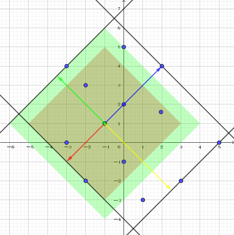

New York 是个由 $N$ 条垂直道路 (编号为 $1 \sim N$) 和 $M$ 条水平道路 (编号为 $1 \sim M$) 组成的城市。
$C$ 个朋友分别住在该城市中的 $C$ 个酒店中，这些酒店分别坐落在垂直道路和水平道路的相交处。由于他们要庆祝 scx 的生日，于是他们想去 $H$ 个餐馆中的一个 (当然，这 $H$ 个餐厅也坐落在垂直道路和水平道路的相交处)。
他们想知道，这 $C$ 个酒店到餐馆的最大距离 (即最远的酒店到餐厅的距离) 的最小可能值是多少。帮助朋友们确定一个合适的餐厅以庆祝生日。
假设相邻两个相交处的距离均等于 $1$。
第一行包含两个正整数 $N, M$ ($N, M \leq 10^9$)，描述城市的大小。
第二行包含一个正整数 $C$ ($C \leq 10^5$)，表示朋友们住的酒店个数。
接下来的 $C$ 行，每行两个正整数 $x, y$ ($x \leq N, y \leq M$)，描述第 $i$ 个酒店的坐标。
紧跟着一行，包含一个正整数 $H$ ($H \leq 10^5$)，表示餐馆的个数。
接下来的 $H$ 行，每行两个正整数 $x, y$，以类似地格式给出餐馆的坐标。
注意有些餐馆和酒店的坐标可能相同。
第一行输出一个整数，表示距离的最大距离的最小可能值。
第二行输出一个整数，表示达到这个最优值的餐馆的编号。如果有多个餐馆均符合要求，输出任意一个均可。
可以看出，这是一个 Manhattan 距离的问题。
如果我们可以得到对于每个餐馆，它到最远酒店的距离，那么最后取个 $\min$ 就可以了。因此关键就是如何得到它与最远酒店的距离。即在 Manhattan 平面上做 "圆"，使之碰到最远的点时，"圆" 的 “半径"。
我们知道，Manhattan 平面上的圆，其实就是 ($45^\circ$ 斜着摆的) 正方形，因此在一个方向最远的点，一定是作对应平行线最远的点 (有点绕，比如说，在东北方向最远的点，一定是 $x+y$ 最远的点，如下图)。
因此，对给定的 $C$ 个点，我们只需求出使 $x+y, x-y, -x+y, -x-y$ 分别最大的 $4$ 个点就可以了 (可能重复)，其它点均可忽略 (这是由 Manhattan 平面上的圆的性质所决定的，因此 Chebyshev 平面上也可以这么做，但是 Euclid 平面上就没办法了)。
那么丢与每个餐馆，到最远酒店的距离，一定是到这 $4$ 个酒店的距离之一 (这个距离很简单，只需令它的 $a+b$ 值与 $x+y$ 的值作差即可)，那么取这 $4$ 个距离的 $\max$ 值即可，时间复杂度 $O(C + 4H)$。
#include <bits/stdc++.h>
#define N 100034
using namespace std;
typedef long long ll;
int n, m, i, x, y, anh;
ll XY, Xy, xY, xy;
ll d, ans;
inline void up(ll &x, const ll y) {x < y ? x = y : 0;}
int main(){
XY = Xy = xY = xy = INT_MIN; ans = INT_MAX;
scanf("%*d%*d%d", &n);
for(i = 1; i <= n; ++i){
scanf("%d%d", &x, &y);
up(XY, x + y); up(Xy, x - y); up(xY, - x + y); up(xy, - x - y);
}
scanf("%d", &m);
for(i = 1; i <= m; ++i){
scanf("%d%d", &x, &y);
up(d = XY - (x + y), Xy - (x - y));
up(d, xY - (- x + y));
up(d, xy - (- x - y));
if(d < ans) {ans = d; anh = i;}
}
printf("%lld\n%d\n", ans, anh);
return 0;
}
根据写的姿势合理调整是否使用 long long (反正我是用了)，注意 Codeforces 上 64 位整数的输出方式 (上面那份代码其实是假的)，还有就是记得变量初始置为 $- \infty$。